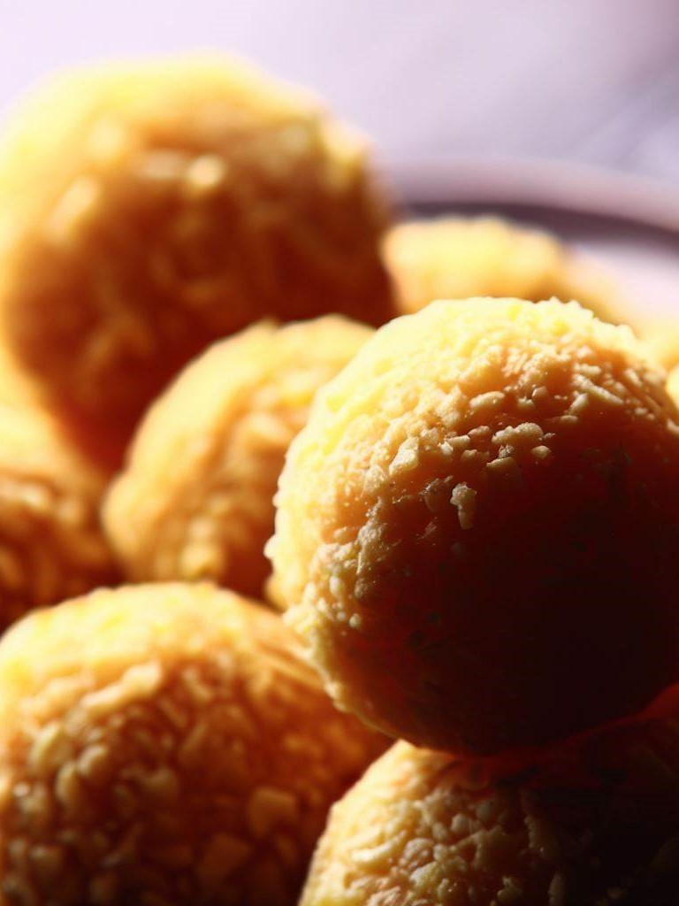

Savoring the Sweetness: India's Top 5 Vegetarian Desserts and Their Delectable Recipes
Namaste! food enthusiasts and fellow dessert lovers!
I'm delighted to bring you another mouthwatering blog post that celebrates the sweet side of Indian cuisine.
India is renowned for its diverse and delightful desserts, and today, I'm going to share with you the top 5 sweet dishes that are adored by millions across the country.
Plus, I'll provide you with easy-to-follow recipes, so you can recreate these delectable treats in the comfort of your own kitchen.
Gulab Jamun
Ingredients:
- 1 cup milk powder
- 1/4 cup all-purpose flour
- A pinch of baking soda
- 2 tbsp ghee (clarified butter)
- Milk, as needed to make the dough
- Oil for deep frying
- 2 cups sugar
- 1 cup water
- A few saffron strands
- 1/2 tsp cardamom powder
Instructions:
- n a wide and deep saucepan, combine sugar and water. You can also add a few saffron strands for extra flavor and a beautiful color. Turn on the heat to medium-high.
- Stir the sugar and water mixture until the sugar dissolves completely. After that, reduce the heat to low, and let it simmer for about 5-7 minutes. The syrup should slightly thicken, but it doesn't need to reach any specific consistency. Just ensure it's warm when you add the fried Gulab Jamun.
- Add cardamom powder to the sugar syrup, which will infuse it with a delightful aroma. Keep the sugar syrup warm on the lowest heat setting while you prepare the Gulab Jamun.
- In a mixing bowl, combine milk powder, all-purpose flour, a pinch of baking soda, and 2 tablespoons of ghee. Mix these dry ingredients well.
- Gradually add a small amount of milk (about 2-3 tablespoons) to the dry ingredients. Begin kneading the mixture to form a soft and smooth dough. If the dough feels too dry, add a little more milk as needed. The dough should be soft but not sticky.
- Once the dough is ready, divide it into small, equal-sized portions. Roll these portions into smooth, crack-free balls, ensuring there are no cracks on the surface. Smoothing out the dough balls is crucial to prevent them from breaking while frying.
- Heat oil in a deep frying pan on medium-low heat. To test if the oil is ready for frying, drop a small piece of dough into the oil; if it rises to the surface and starts bubbling gently, the oil is at the right temperature.
- Carefully add the prepared Gulab Jamun balls to the hot oil. Fry them on low to medium-low heat, turning them gently and frequently to ensure even browning. Fry until they turn a rich golden brown color. This will take about 7-10 minutes.
- Once the Gulab Jamun balls are evenly golden brown, remove them from the oil using a slotted spoon, allowing excess oil to drain.
- Immediately place the hot Gulab Jamun into the warm sugar syrup. Ensure that they are fully immersed in the syrup.
- Let the Gulab Jamun soak in the sugar syrup for at least 1-2 hours. During this time, they will absorb the syrup and become soft, spongy, and incredibly sweet.
- Your homemade Gulab Jamun is ready to be served! Garnish with some chopped nuts if desired and enjoy this delectable Indian sweet.
Rasgulla
Ingredients:
- 1 liter full-fat milk
- 1/2 cup lemon juice
- 1 cup sugar
- 4 cups water
- A pinch of cardamom powder
Instructions:
- Pour the full-fat milk into a heavy-bottomed pan and bring it to a boil over medium heat, stirring occasionally to prevent it from sticking to the bottom.
- Once the milk comes to a boil, reduce the heat to low and add the strained lemon juice. Stir continuously as the milk curdles.
- As the milk solids separate from the whey, turn off the heat. The whey should appear transparent, and the chenna (milk solids) should have separated completely.
- Strain the chenna through a muslin cloth or a fine sieve to remove excess whey. Rinse the chenna under cold running water to remove the lemony taste.
- Gather the corners of the muslin cloth or sieve, and squeeze out any remaining whey from the chenna.
- Place the chenna on a clean, dry surface, such as a large plate or countertop.
- Knead the chenna with the heels of your hands for about 10-15 minutes until it becomes smooth and soft. This step is crucial to ensure the Rasgulla turns out spongy.
- Divide the smooth chenna into small, equal-sized portions and roll them into smooth, crack-free balls. Ensure there are no cracks on the surface.
- In a wide and deep saucepan, combine 1 cup of sugar with 4 cups of water.
- Place the saucepan over medium heat and stir until the sugar dissolves completely.
- Bring the sugar syrup to a boil and add a pinch of cardamom powder for flavor. Simmer for 5 minutes.
- Carefully drop the prepared chenna balls into the boiling sugar syrup. Cover the saucepan with a lid.
- Cook the Rasgulla in the sugar syrup over medium heat for about 20 minutes, with the lid on. They will puff up and double in size during this time.
- Turn off the heat and let the Rasgulla cool in the syrup for at least 1-2 hours. They will absorb the sugar syrup and become soft and spongy.
- Your homemade Rasgulla is ready to be served! You can garnish them with a sprinkle of chopped pistachios or almonds for a delightful presentation.
Jalebi
Ingredients:
- 1 cup all-purpose flour
- 1 tbsp gram flour (besan)
- 1/2 cup yogurt
- A pinch of baking soda
- 1 cup sugar
- 1/2 cup water
- A few saffron strands
- 1/2 tsp cardamom powder
- Ghee or oil for frying
Instructions:
- In a mixing bowl, combine the all-purpose flour (maida) and gram flour (besan).
- Add a pinch of baking soda and turmeric powder for color. Mix well.
- Gradually add yogurt (curd) to the dry ingredients while stirring continuously to form a thick, smooth batter.
- Add water gradually to the batter, whisking continuously to avoid lumps. The batter should have a pouring consistency, similar to pancake batter. Set the batter aside for fermentation for about 30 minutes. During this time, it will become slightly frothy.
- In a separate saucepan, combine 1 cup of sugar and 1/2 cup of water. Add a few saffron strands (if using) and a few drops of lemon juice to prevent crystallization.
- Place the saucepan over medium heat and stir until the sugar dissolves completely.
- Bring the sugar syrup to a boil and simmer for about 5-7 minutes, or until it reaches a one-string consistency. To test the consistency, take a small amount of syrup between your thumb and forefinger and gently pull them apart; a single thread should form.
- Once the sugar syrup reaches the desired consistency, add cardamom powder for flavor and turn off the heat. Keep the sugar syrup warm.
- Heat ghee or oil in a deep frying pan over medium heat. The oil should be hot but not smoking.
- Fill a jalebi squeezy bottle or a piping bag with the prepared jalebi batter.
- Carefully pipe the batter into hot oil to form spiral or concentric circles. Start from the inside and work your way out. You can make small or large jalebis, depending on your preference.
- Fry the jalebis until they are crispy and golden brown on both sides, turning them gently with a slotted spoon. This will take about 2-3 minutes per side.
- Once fried, remove the jalebis from the oil and drain the excess oil by placing them on a plate lined with paper towels.
- Immediately transfer the hot jalebis into the warm sugar syrup. Ensure they are fully immersed in the syrup.
- Let the jalebis soak in the sugar syrup for about 1-2 minutes, allowing them to absorb the syrup and become sweet and syrupy.
- Your homemade Jalebi is ready to be served! Garnish with chopped pistachios or almonds if desired.
- Jalebi is best enjoyed when it's warm, so serve it immediately for the best taste and texture.
Barfi
Ingredients:
- 2 cups milk powder
- 1/2 cup condensed milk
- 1/4 cup milk
- A pinch of cardamom powder
- Chopped nuts for garnish (optional)
Instructions:
- In a non-stick pan or a heavy-bottomed pan, combine 2 cups of milk powder and 1/2 cup of condensed milk.
- Mix the two ingredients well until they are thoroughly combined.
- Add 1/4 cup of milk to the mixture to make a smooth, lump-free paste. Stir continuously to ensure there are no lumps.
- Turn on the heat to low and start cooking the mixture. Continue stirring constantly to prevent it from sticking to the bottom of the pan.
- Cook the mixture on low heat for about 5-7 minutes. It will thicken and start leaving the sides of the pan. This is the stage when you should add a pinch of cardamom powder for flavor.
- Keep stirring until the mixture forms a thick, lump-free dough-like consistency. It should come together easily when you stir it.
- Once the mixture reaches this stage, turn off the heat. Be careful not to overcook it; otherwise, the Barfi can become too dry.
- While the mixture is still warm, transfer it to a greased plate or a square tray. Use a spatula or the back of a spoon to spread it evenly and smooth the surface. You can also garnish the top with chopped nuts if desired.
- Allow the Barfi to cool down for about 1-2 hours at room temperature. During this time, it will set and become firm.
- Once the Barfi has completely cooled and set, use a sharp knife to cut it into square or diamond shapes. Be gentle while cutting to avoid breaking the pieces.
- Your homemade Barfi is ready to be served! You can store the pieces in an airtight container for future enjoyment.
- Barfi is a delightful Indian sweet that can be enjoyed on its own or as a dessert after a meal. It also makes for a wonderful gift during festivals and special occasions.
Ladoo
Ingredients:
- 2 cups besan (gram flour)
- 1 cup powdered sugar
- 1/2 cup ghee (clarified butter)
- A pinch of cardamom powder
- Chopped nuts for garnish (optional)
Instructions:
- Heat 1/2 cup of ghee (clarified butter) in a heavy-bottomed pan over low-medium heat. Let it melt completely.
- Once the ghee is melted, add 2 cups of besan (gram flour) to it.
- Begin roasting the besan in ghee over low to medium heat. Stir continuously to avoid any lumps and to ensure even cooking.
- Keep roasting until the besan turns golden brown and starts emitting a nutty aroma. This process can take around 15-20 minutes. Be patient and make sure not to rush this step; slow and steady cooking is key to achieving the right flavor and texture.
- Once the besan is nicely roasted, turn off the heat. Let it cool slightly but not completely.
- While the besan mixture is still warm, add 1 cup of powdered sugar to it. You can adjust the sugar to your taste preference.
- Add a pinch of cardamom powder for flavor.
- Mix the sugar and cardamom powder into the warm besan mixture until well combined. It should resemble a crumbly texture.
- Allow the mixture to cool down a bit more, so it's comfortable to handle.
- Once the mixture is cool enough to handle, take small portions of it and shape them into round ladoos by gently pressing and rolling between your palms. You can make the ladoos as small or as large as you like.
- If you prefer, garnish the ladoos with chopped nuts (like almonds or cashews) while shaping them. Press the nuts gently into the ladoos to ensure they stick.
- Your homemade Ladoo is ready to be served! Allow the ladoos to cool completely before storing them.
- Ladoo is a delightful Indian sweet that can be enjoyed on various occasions, festivals, or as a treat for yourself and your loved ones.
- Store the ladoos in an airtight container at room temperature for up to a week, or refrigerate them for extended shelf life.

These sweet dishes not only tickle your taste buds but also offer a slice of India's rich cultural and culinary heritage. Whether you're celebrating a special occasion or simply craving something sweet, these recipes are sure to please your palate.
I hope you enjoy trying out these recipes as much as I enjoyed sharing them with you. Remember, the key to creating these delightful desserts is patience and a dash of love. Experiment with these recipes, and don't be afraid to add your own personal touch.
So, there you have it - India's top 5 vegetarian sweet dishes and their easy-to-follow recipes. Gather your ingredients, put on your apron, and embark on a culinary journey through the vibrant flavors of India. Sweeten your life, one spoonful at a time!
Stay tuned for more culinary adventures, tips, and recipes from India's most popular chef and blog specialist. Until next time, happy cooking!